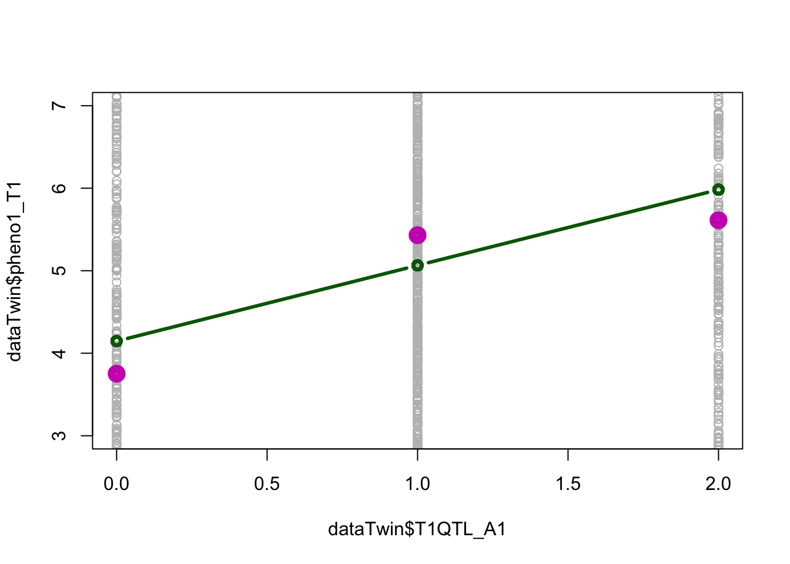
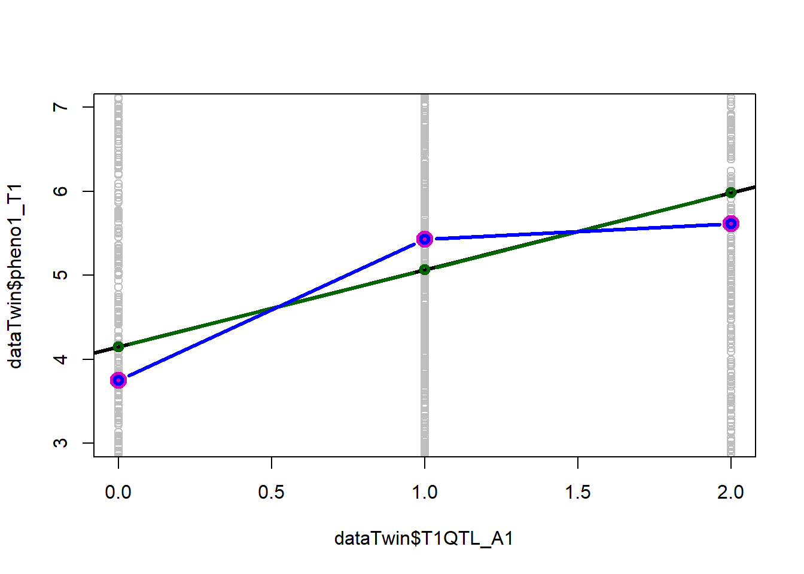

Chapter 8 Population Genetics
8.1 Case study 1: Heritability and human traits
8.1.1 Part 1
Scenario: You are a researcher working on a twin study on cardiovascular traits to assess the genetic and environmental contribution relevant to metabolism and cardiovascular disease risk. You have recruited a cohort of volunteer adult twins of the same ancestry. The volunteers have undergone a series of baseline clinical evaluations and performed genotyping on a panel of single nucleotide polymorphisms that may be associated with the traits.
8.1.1.1 Questions for Discussion
Q1. Besides the clinical measurements, what data do you need to collect from the subjects?Answers:
- Sex
- Age
- Other confounding factors, e.g. BMI, blood pressure, smoking status, etc.
Answers:
- Allele: 0/1, 1/2, A/C, etc
- Genotype: 0 0, 0 1, 1 0, 1 1
- Genotype probabilities: P(0/0)=0, P(0/1)=1, P(1/1)=0
- Genotype dosage: 0/1/2, 0.678 (continuous from 0-1 or 0-2)
Answers:
- Allelic chi-square test
- Fisher’s exact test
- Linear/Logistic regression
- Linear mixed model
8.1.1.2 Hands-on exercise : Association test
Now, you are given a dataset of age- and sex-matched twin cohort with two cardiovascular phenotypes and 5 quantitative trait loci (QTL). Data set and template notebook are available on Moodle (recommended) and also on this GitHub Repo.
The information for columns:
- zygosity: 1 for monozygotic (MZ) and 2 for dizygotic (DZ) twin
T1QTL_A[1-5]andT2QTL_A[1-5]: 5 quantitative loci (A1-A5) in additive coding for Twin 1 (T1) and Twin 2 (T2) respectively- The same 5 QTL (D1-D5) in dominance coding for T1 and T2
- Phenotype scores of T1 and T2 for the two quantitative cardiovascular traits
Download the data dataTwin2024.dat to your working directory. Start the RStudio program and set the working directory.
Exploratory analysis
Q1. How many MZ and DZ volunteers are there?Answers:
- 1000 MZ and 1000 DZ
Answers:
- Dosage/Count of non-reference allele : 0, 1, and 2
- A1-5: The QTLs are biallelic with two alleles A and a. The genotypes aa, Aa, and AA are coded additively as 0 (aa), 1 (Aa) and 2 (AA).
- D1-5: The genotypes aa, Aa, and AA are coded as 0 (aa), 1 (Aa) and 0 (AA).
Answers:
- Yes. The pairwise correlations are low (<0.2).
Answers:
- Yes. T2 individual 1303 has phenotype score (-4.21) being 4 SD below the mean.
table(dataTwin$zygosity) # Q1: shows number of MZ and DZ twin pairs
#>
#> 1 2
#> 1000 1000
table(dataTwin$T1QTL_A1) # Q2: shows the distribution of QTL_A1
#>
#> 0 1 2
#> 474 1021 505
table(dataTwin$T1QTL_D1) # Q2: shows the distribution of QTL_D1
#>
#> 0 1
#> 979 1021
table(dataTwin$T1QTL_A1, dataTwin$T1QTL_D1) # Q2: shows the distribution of QTL_A1 in relation to QTL_D1
#>
#> 0 1
#> 0 474 0
#> 1 0 1021
#> 2 505 0
cor(dataTwin[,2:11]) # Q3: shows the correlation between QTL_As
#> T1QTL_A1 T1QTL_A2 T1QTL_A3 T1QTL_A4 T1QTL_A5
#> T1QTL_A1 1.00000000 -0.005470340 0.021705688 0.01940408 0.016278190
#> T1QTL_A2 -0.00547034 1.000000000 0.017344822 -0.01421677 -0.008678746
#> T1QTL_A3 0.02170569 0.017344822 1.000000000 0.01335711 -0.036751338
#> T1QTL_A4 0.01940408 -0.014216767 0.013357109 1.00000000 0.074899996
#> T1QTL_A5 0.01627819 -0.008678746 -0.036751338 0.07490000 1.000000000
#> T2QTL_A1 0.53243815 0.004201635 -0.013909013 0.03252724 0.020081970
#> T2QTL_A2 -0.04561174 0.464131160 -0.005044127 0.01324172 -0.003012277
#> T2QTL_A3 0.03316574 -0.003552831 0.521253656 0.02045423 0.009081830
#> T2QTL_A4 0.03271254 -0.033419904 0.020422583 0.48641289 0.019247531
#> T2QTL_A5 -0.01285323 0.030413269 -0.045121964 0.08288145 0.457962222
#> T2QTL_A1 T2QTL_A2 T2QTL_A3 T2QTL_A4 T2QTL_A5
#> T1QTL_A1 0.532438150 -0.045611740 0.033165736 0.032712539 -0.01285323
#> T1QTL_A2 0.004201635 0.464131160 -0.003552831 -0.033419904 0.03041327
#> T1QTL_A3 -0.013909013 -0.005044127 0.521253656 0.020422583 -0.04512196
#> T1QTL_A4 0.032527239 0.013241725 0.020454234 0.486412895 0.08288145
#> T1QTL_A5 0.020081970 -0.003012277 0.009081830 0.019247531 0.45796222
#> T2QTL_A1 1.000000000 0.006179257 -0.013129314 0.048294183 -0.01325839
#> T2QTL_A2 0.006179257 1.000000000 -0.020860987 0.002164782 -0.01131418
#> T2QTL_A3 -0.013129314 -0.020860987 1.000000000 -0.010583797 -0.02101270
#> T2QTL_A4 0.048294183 0.002164782 -0.010583797 1.000000000 0.04350925
#> T2QTL_A5 -0.013258394 -0.011314179 -0.021012699 0.043509251 1.00000000
cor(dataTwin[,2:11])>0.2
#> T1QTL_A1 T1QTL_A2 T1QTL_A3 T1QTL_A4 T1QTL_A5 T2QTL_A1 T2QTL_A2
#> T1QTL_A1 TRUE FALSE FALSE FALSE FALSE TRUE FALSE
#> T1QTL_A2 FALSE TRUE FALSE FALSE FALSE FALSE TRUE
#> T1QTL_A3 FALSE FALSE TRUE FALSE FALSE FALSE FALSE
#> T1QTL_A4 FALSE FALSE FALSE TRUE FALSE FALSE FALSE
#> T1QTL_A5 FALSE FALSE FALSE FALSE TRUE FALSE FALSE
#> T2QTL_A1 TRUE FALSE FALSE FALSE FALSE TRUE FALSE
#> T2QTL_A2 FALSE TRUE FALSE FALSE FALSE FALSE TRUE
#> T2QTL_A3 FALSE FALSE TRUE FALSE FALSE FALSE FALSE
#> T2QTL_A4 FALSE FALSE FALSE TRUE FALSE FALSE FALSE
#> T2QTL_A5 FALSE FALSE FALSE FALSE TRUE FALSE FALSE
#> T2QTL_A3 T2QTL_A4 T2QTL_A5
#> T1QTL_A1 FALSE FALSE FALSE
#> T1QTL_A2 FALSE FALSE FALSE
#> T1QTL_A3 TRUE FALSE FALSE
#> T1QTL_A4 FALSE TRUE FALSE
#> T1QTL_A5 FALSE FALSE TRUE
#> T2QTL_A1 FALSE FALSE FALSE
#> T2QTL_A2 FALSE FALSE FALSE
#> T2QTL_A3 TRUE FALSE FALSE
#> T2QTL_A4 FALSE TRUE FALSE
#> T2QTL_A5 FALSE FALSE TRUE
apply(dataTwin[22:25],2,function(x){ any(x < (mean(x) - 4*sd(x))) }) # Q4: any outlier < 4 SD from the mean for the two quantitative phenotypes
#> pheno1_T1 pheno1_T2 pheno2_T1 pheno2_T2
#> FALSE FALSE FALSE TRUE
apply(dataTwin[22:25],2,function(x){ any(x > (mean(x) + 4*sd(x))) }) # Q4: any outlier > 4 SD from the mean for the two quantitative phenotypes
#> pheno1_T1 pheno1_T2 pheno2_T1 pheno2_T2
#> FALSE FALSE FALSE FALSE
# remove the phenotype score of the outlier (T2) for the phenotype 2 (pheno2_T2)
outlier<- which(dataTwin$pheno2_T2 < (mean(dataTwin$pheno2_T2) - 4*sd(dataTwin$pheno2_T2) ))
outlier
#> [1] 1303
dataTwin$pheno2_T2[outlier]
#> [1] -4.21
dataTwin$pheno2_T2[outlier] <- NAAssociation test
Test for association between QTL and pheno1 for T1
- Regress
pheno1_T1onT1QTL_A1to estimate the proportion of variance explained (R2). - Model: pheno1_T1 = b0 + b1* T1QTL_A1 + e
- Calculate the conditional mean of phenotype (i.e. phenotypic mean conditional genotype)
If the relationship between the QTL and the phenotype is perfectly linear, the regression line should pass through the conditional means (c_means), and the differences between the conditional means should be about equal.
Q5. What are the values of b0, b1? Is QTL1 significant associated with the phenotype at alpha<0.01 (multiple testing of 5 loci)?Answers:
- b0 = 4.1464
- b1 = 0.9180
- QTL1 is significantly associated with the phenotype with \(P = 1.02\times 10^{-13}\)
Answers:
- Proportion of phenotypic variance explained = 0.027
linA1 <- lm(pheno1_T1~T1QTL_A1, data=dataTwin)
summary(linA1)
#>
#> Call:
#> lm(formula = pheno1_T1 ~ T1QTL_A1, data = dataTwin)
#>
#> Residuals:
#> Min 1Q Median 3Q Max
#> -15.1225 -2.4435 0.1105 2.7775 12.2555
#>
#> Coefficients:
#> Estimate Std. Error t value Pr(>|t|)
#> (Intercept) 4.1464 0.1511 27.438 < 2e-16 ***
#> T1QTL_A1 0.9180 0.1226 7.491 1.02e-13 ***
#> ---
#> Signif. codes: 0 '***' 0.001 '**' 0.01 '*' 0.05 '.' 0.1 ' ' 1
#>
#> Residual standard error: 3.834 on 1998 degrees of freedom
#> Multiple R-squared: 0.02732, Adjusted R-squared: 0.02683
#> F-statistic: 56.11 on 1 and 1998 DF, p-value: 1.022e-13
summary(linA1)$r.squared # proportion of explained variance by additive component
#> [1] 0.02731675
c_means <- by(dataTwin$pheno1_T1,dataTwin$T1QTL_A1,mean)
plot(dataTwin$pheno1_T1 ~ dataTwin$T1QTL_A1, col='grey', ylim=c(3,7))
lines(c(0,1,2), c_means, type="p", col=6, lwd=8)
lines(sort(dataTwin$T1QTL_A1),sort(linA1$fitted.values), type='b', col="dark green", lwd=3)
To test for the non-linearity, we can use the dominance coding of the QTL and add the dominance term to the regression model.
- Model: pheno1_T1 = b0 + b1* T1QTL_A1 + b2* T1QTL_D1 + e
- Repeat for T2.
Answers:
- As T1 and T2 are biologically related as MZ or DZ twins, the genotypes of the QTLs are not independent. Treating the genotypes of T1 and T2 as independent observations will introduce bias.
Answers:
- Yes. The model with dominance provides a better goodness of fit (lower p-value)
linAD1 <- lm(pheno1_T1 ~ T1QTL_A1 + T1QTL_D1, data=dataTwin)
summary(linAD1) # results lm(phenoT1~T1QTL_A1+T1QTL_D1)
#>
#> Call:
#> lm(formula = pheno1_T1 ~ T1QTL_A1 + T1QTL_D1, data = dataTwin)
#>
#> Residuals:
#> Min 1Q Median 3Q Max
#> -14.7524 -2.5131 0.0586 2.8215 11.8894
#>
#> Coefficients:
#> Estimate Std. Error t value Pr(>|t|)
#> (Intercept) 3.7522 0.1753 21.405 < 2e-16 ***
#> T1QTL_A1 0.9301 0.1220 7.622 3.83e-14 ***
#> T1QTL_D1 0.7483 0.1708 4.382 1.24e-05 ***
#> ---
#> Signif. codes: 0 '***' 0.001 '**' 0.01 '*' 0.05 '.' 0.1 ' ' 1
#>
#> Residual standard error: 3.816 on 1997 degrees of freedom
#> Multiple R-squared: 0.03658, Adjusted R-squared: 0.03562
#> F-statistic: 37.91 on 2 and 1997 DF, p-value: < 2.2e-16
plot(dataTwin$pheno1_T1 ~ dataTwin$T1QTL_A1, col='grey', ylim=c(3,7))
abline(linA1, lwd=3)
lines(c(0,1,2), c_means, type='p', col=6, lwd=8)
lines(sort(dataTwin$T1QTL_A1),sort(linA1$fitted.values), type='b', col="dark green", lwd=3)
lines(sort(dataTwin$T1QTL_A1),sort(linAD1$fitted.values), type='b', col="blue", lwd=3)
Q9. Repeat for the other 4 QTL and determine which QTL shows strongest association with the phenotype T1Answers:
- QTL3 with \(P = 7.77 \times 10^{-25}\) for model with dominance
allQTL_A_T1 <- 2:6
cpheno1_T1 <- which(colnames(dataTwin)=="pheno1_T1")
## Additive
cbind(lapply(allQTL_A_T1,function(x){ fstat<- summary(lm(pheno1_T1 ~ ., data=dataTwin[,c(x,cpheno1_T1)]))$fstatistic; pf(fstat[1],fstat[2],fstat[3],lower.tail = F) }))
#> [,1]
#> [1,] 1.021942e-13
#> [2,] 8.329416e-15
#> [3,] 1.007527e-13
#> [4,] 4.523758e-18
#> [5,] 8.207842e-13
## Dominance
cbind(lapply(allQTL_A_T1,function(x){ fstat<- summary(lm(pheno1_T1 ~ ., data=dataTwin[,c(x,x+10,cpheno1_T1)]))$fstatistic; pf(fstat[1],fstat[2],fstat[3],lower.tail = F) }))
#> [,1]
#> [1,] 6.907834e-17
#> [2,] 2.166957e-22
#> [3,] 7.771588e-25
#> [4,] 8.124437e-25
#> [5,] 4.312127e-21
#Q9: QTL3 shows the strongest association with P=7.771588e-25
linAD3 <- lm(pheno1_T1 ~ T1QTL_A3 + T1QTL_D3, data=dataTwin)
summary(linAD3) # results lm(phenoT1~T1QTL_A1+T1QTL_D1)
#>
#> Call:
#> lm(formula = pheno1_T1 ~ T1QTL_A3 + T1QTL_D3, data = dataTwin)
#>
#> Residuals:
#> Min 1Q Median 3Q Max
#> -14.4988 -2.5701 0.1843 2.6991 11.5974
#>
#> Coefficients:
#> Estimate Std. Error t value Pr(>|t|)
#> (Intercept) 3.5437 0.1684 21.038 < 2e-16 ***
#> T1QTL_A3 0.9076 0.1181 7.683 2.43e-14 ***
#> T1QTL_D3 1.2714 0.1692 7.515 8.55e-14 ***
#> ---
#> Signif. codes: 0 '***' 0.001 '**' 0.01 '*' 0.05 '.' 0.1 ' ' 1
#>
#> Residual standard error: 3.782 on 1997 degrees of freedom
#> Multiple R-squared: 0.05408, Adjusted R-squared: 0.05313
#> F-statistic: 57.09 on 2 and 1997 DF, p-value: < 2.2e-16If the subjects with top 10% of the phenotype score are considered as cases, perform case-control association test for most significant SNP (from Q9) and interpret the result.
Q10. What are the odds ratio, p-value, and 95% confidence interval (CI)?Answers:
- Odds ratio is 4.28 and the 95% CI is (2.54, 7.20)
quant10 <- quantile(c(dataTwin$pheno1_T1),seq(0,1,0.1))
dataTwin$CaseT1 <- as.numeric(dataTwin$pheno1_T1>quant10[10])
dataTwin$T1QTL_AD3 <- (dataTwin$T1QTL_A3 + dataTwin$T1QTL_D3)/2
logisticAD3 <- summary(glm(CaseT1 ~ T1QTL_AD3, data=dataTwin, family="binomial"))
exp(logisticAD3$coefficients[2,1]) # odds ratio
#> [1] 4.277439
exp(logisticAD3$coefficients[2,1]-1.96*logisticAD3$coefficients[2,2]) # lower 95% confidence interval
#> [1] 2.539663
exp(logisticAD3$coefficients[2,1]+1.96*logisticAD3$coefficients[2,2]) # upper 95% confidence interval
#> [1] 7.2042978.1.2 Part 2
Scenario: You are asked to estimate the additive genetic variance, dominance genetic variance and/or shared environmental variance using regression-based method and a classical twin design.
\[\begin{align*} \text{For ADE model : }~ & \sigma^{2}_{P} = \sigma^{2}_{A} + \sigma^{2}_{D} + \sigma^{2}_{E}\\ \text{For ACE model : }~ & \sigma^{2}_{P} = \sigma^{2}_{A} + \sigma^{2}_{C} + \sigma^{2}_{E}, \quad \text{where} \\ \sigma^{2}_{P} & \text{ is the phenotypic variance}, \\ \sigma^{2}_{A} & \text{ is additive genetic variance}, \\ \sigma^{2}_{D} & \text{ is dominance genetic variance}, \\ \sigma^{2}_{C} & \text{ is shared environmental variance, and} \\ \sigma^{2}_{E} & \text{ is unshared environmental variance.} \end{align*}\]
For ADE model, given the standardization of the phenotype,
\[\begin{align*} cov(MZ) = cor(MZ) & = rMZ = \sigma^{2}_{A} + \sigma^{2}_{D} \\ cov(DZ) = cor(DZ) & = rDZ = 0.5 * \sigma^{2}_{A} + 0.25 * \sigma^{2}_{D} \quad \text{ , where} \\ \end{align*}\] the coefficients 1/2 and 1/4 are based on quantitative genetic theory (Mather & Jinks, 1971).
By solving the unknowns, the variance explained by different components for the ADE model:
\[\begin{align*} \sigma^{2}_{A} & = 4*rDZ - rMZ \\ \sigma^{2}_{D} & = 2*rMZ - 4*rDZ \\ \sigma^{2}_{E} & = 1 - \sigma^{2}_{A} - \sigma^{2}_{D} \\ \end{align*}\]
For ACE model,
\[\begin{align*} cov(MZ) = cor(MZ) & = rMZ= \sigma^{2}_{A} + \sigma^{2}_{C} \\ cov(DZ) = cor(DZ) & = rDZ = 0.5 * \sigma^{2}_{A} + \sigma^{2}_{C} \quad \text{ , where} \\ \end{align*}\]
By solving the unknowns, the variance explained by different components for the ACE model:
\[\begin{align*} \sigma^{2}_{A} & = 2*(rMZ - rDZ) \\ \sigma^{2}_{C} & = 2*rDZ - rMZ \\ \sigma^{2}_{E} & = 1 - \sigma^{2}_{A} - \sigma^{2}_{C} = 1 - rMZ \end{align*}\]
8.1.2.1 Hands-on exercise : variance explained using regression-based method
Q1. What is the variance of the phenotype?
Q2. Compute the explained variance attributable to the additive genetic component of the QTL with strongest association in Part 1.
Q3. Compute the explained variance attributable to the dominance genetic component of the QTL with strongest association in Part 1.
R2 from the regression represents the proportion of phenotypic variance explained; thus the raw explained variance component is R2 times the variance of the phenotype (var_pheno).
Answers
- The proportion of explained variance are 0.0273 (additive) and 0.0541 (total: additive + dominance).
- As the predictors are uncorrelated, the proportion of explained variance by dominance = 0.0541 - 0.0273 = 0.0267
- Given the phenotypic variance of 15.102, then
- Total genetic: 0.0541*15.102 = 0.8168
- Additive genetic: 0.0273*15.102 = 0.4128
- Dominance genetic: 0.0267*15.102 = 0.4040
var_pheno <- var(dataTwin$pheno1_T1) # the variance of the phenotype
var_pheno
#> [1] 15.10257
linAD3 <- lm(pheno1_T1 ~ T1QTL_A3 + T1QTL_D3, data=dataTwin)
linA3 <- lm(pheno1_T1 ~ T1QTL_A3, data=dataTwin)
summary(linAD3)$r.squared # proportion of explained variance by total genetic component
#> [1] 0.05408025
summary(linA3)$r.squared # proportion of explained variance by additive component
#> [1] 0.02733034
summary(linAD3)$r.squared*var_pheno # (raw) variance component of total genetic component
#> [1] 0.8167509
summary(linA3)$r.squared*var_pheno # (raw) variance component of additive genetic component
#> [1] 0.4127585
(summary(linAD3)$r.squared-summary(linA3)$r.squared)*var_pheno # (raw) variance component of dominance genetic component
#> [1] 0.4039924Q4. Estimate the variance explained by all the QTL using linear regression.
Answers
- Proportion of variance explained by all 5 QTLs with dominance = 0.23 and the total variance explained = 3.52.
# compute for all 5 QTL
linAD5=(lm(pheno1_T1 ~ T1QTL_A1 + T1QTL_A2 + T1QTL_A3 + T1QTL_A4 + T1QTL_A5 +
T1QTL_D1 + T1QTL_D2 + T1QTL_D3 + T1QTL_D4 + T1QTL_D5,
data=dataTwin))
summary(linAD5)$r.squared # proportion of explained variance by total genetic component
#> [1] 0.2330307
summary(linAD5)$r.squared*var_pheno # (raw) variance component of total genetic component
#> [1] 3.5193638.1.2.2 Hands-on exercise : variance explained using a classical twin design.
Based on our regression results, we have estimates of the total genetic variance as well as the A and D components for phenotype 1 explained by the QTLs. In practice, it is impossible to know all the variants associated with any polygenic trait.
Alternatively, we can use ADE or ACE models to estimate the A (additive genetic) and D (dominance)/C (shared environmental) variance with the classical twin design for phenotype 1 without genotypes.
Q5. Which model should be used? ACE or ADE? Let’s first compute rMZ and rDZ.Answers
- rMZ = 0.5434
- rDZ = 0.1904
- As \(rMZ > 2*rDZ\), ADE model should be used.
dataMZ = dataTwin[dataTwin$zygosity==1, c('pheno1_T1', 'pheno1_T2')] # MZ data frame
dataDZ = dataTwin[dataTwin$zygosity==2, c('pheno1_T1', 'pheno1_T2')] # DZ data frame
rMZ=cor(dataMZ)[2,1] # element 2,1 in the MZ correlation matrix
rDZ=cor(dataDZ)[2,1] # element 2,1 in the DZ correlation matrix
rMZ
rDZAnswers
- \(\sigma^{2}_{A} = 0.2181\)
- \(\sigma^{2}_{D} = 0.3253\)
- \(\sigma^{2}_{E} = 0.4566\)
Similarly, for phenotype 2, we can estimate the proportion of additive and/or dominance genetic variances as well as shared environmental variance using the classical twin design.
Q7. Which model (ACE or ADE) should be considered for phenotype 2?Answers
- ACE as \(rMZ < 2*rDZ\)
Answers
- \(\sigma^{2}_{A} = 0.3526\)
- \(\sigma^{2}_{C} = 0.1610\)
- \(\sigma^{2}_{E} = 0.4864\)
dataMZ = dataTwin[dataTwin$zygosity==1, c('pheno2_T1', 'pheno2_T2')] # MZ data frame
dataDZ = dataTwin[dataTwin$zygosity==2, c('pheno2_T1', 'pheno2_T2')] # DZ data frame
rMZ=cor(dataMZ, use="complete.obs")[2,1] # element 2,1 in the MZ correlation matrix
rDZ=cor(dataDZ, use="complete.obs")[2,1] # element 2,1 in the DZ correlation matrix
rMZ
rDZ
sA2 = 2*(rMZ - rDZ)
sC2 = 2*rDZ - rMZ
sE2 = 1 - rMZ
print(c(sA2, sC2, sE2))8.1.3 References
Evans DM, Gillespie NA, Martin NG. Biometrical genetics. Biol Psychol. 2002 Oct;61(1-2):33-51. doi: 10.1016/s0301-0511(02)00051-0. PMID: 12385668. [Review article]
Falconer, D.S. and Mackay, T.F.C. (1996) Introduction to Quantitative Genetics. 4th Edition, Addison Wesley Longman, Harlow. [Most classical; a lot of online version]
Neale, B., Ferreira, M., Medland, S., & Posthuma, D. (Eds.). (2007). Statistical Genetics: Gene Mapping Through Linkage and Association (1st ed.). Taylor & Francis. https://doi.org/10.1201/9780203967201 [chapter on biometrical genetics; can be borrowed from HKU lib]
https://ibg.colorado.edu/cdrom2020/dolan/biometricalGenetics/biom_gen_2020.pdf [Course material of the Boulder IBG workshop co-organized by top statistical geneticists]